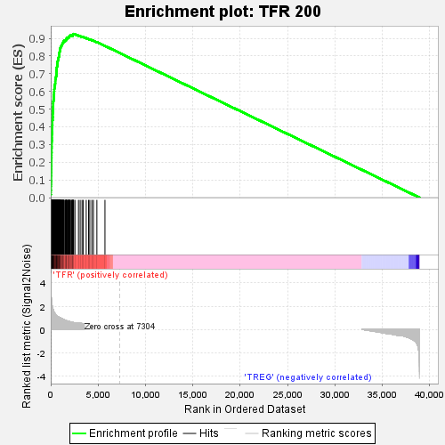
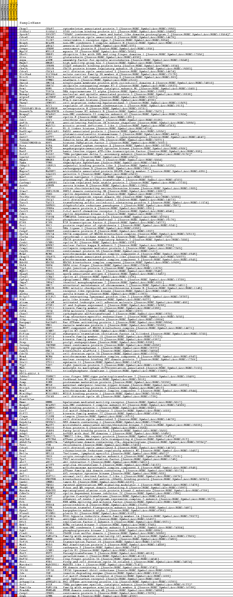
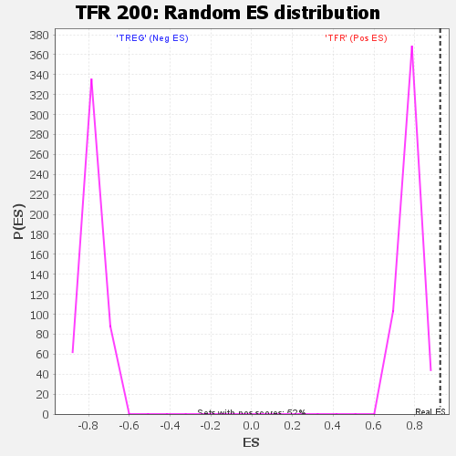

| | | Dataset | SP_tfrvstreg_tfrvstreg.tfr_vs_treg_cls.cls#TFR_versus_TREG |
| Phenotype | tfr_vs_treg_cls.cls#TFR_versus_TREG |
| Upregulated in class | TFR |
| GeneSet | TFR 200 |
| Enrichment Score (ES) | 0.9245539 |
| Normalized Enrichment Score (NES) | 1.199609 |
| Nominal p-value | 0.0 |
| FDR q-value | 0.085436895 |
| FWER p-Value | 0.044 |
Table: GSEA Results Summary

Fig 1: Enrichment plot: TFR 200
Profile of the Running ES Score & Positions of GeneSet Members on the Rank Ordered List
| SYMBOL | TITLE | RANK IN GENE LIST | RANK METRIC SCORE | RUNNING ES | CORE ENRICHMENT | | 1 | Ckap2 | na | 0 | 4.777 | 0.0164 | Yes |
| 2 | S100a11 | na | 16 | 3.708 | 0.0287 | Yes |
| 3 | Spock2 | na | 18 | 3.586 | 0.0409 | Yes |
| 4 | Cdca8 | na | 26 | 3.341 | 0.0522 | Yes |
| 5 | Il1r2 | na | 27 | 3.224 | 0.0632 | Yes |
| 6 | Ncaph | na | 31 | 3.136 | 0.0739 | Yes |
| 7 | Anxa2 | na | 35 | 2.988 | 0.0841 | Yes |
| 8 | Cenpe | na | 38 | 2.934 | 0.0941 | Yes |
| 9 | Myo1f | na | 47 | 2.867 | 0.1037 | Yes |
| 10 | Uhrf1 | na | 48 | 2.866 | 0.1135 | Yes |
| 11 | Glrx | na | 49 | 2.859 | 0.1233 | Yes |
| 12 | Aspm | na | 53 | 2.801 | 0.1328 | Yes |
| 13 | Hmgb2 | na | 54 | 2.796 | 0.1424 | Yes |
| 14 | Cebpb | na | 62 | 2.708 | 0.1515 | Yes |
| 15 | Cks1b | na | 63 | 2.707 | 0.1608 | Yes |
| 16 | Cdca3 | na | 69 | 2.605 | 0.1696 | Yes |
| 17 | Slc39a4 | na | 70 | 2.597 | 0.1784 | Yes |
| 18 | Birc5 | na | 77 | 2.551 | 0.1870 | Yes |
| 19 | Stmn1 | na | 78 | 2.542 | 0.1957 | Yes |
| 20 | Smco4 | na | 79 | 2.542 | 0.2044 | Yes |
| 21 | Ube2c | na | 82 | 2.527 | 0.2130 | Yes |
| 22 | Rrm1 | na | 84 | 2.520 | 0.2216 | Yes |
| 23 | Top2a | na | 90 | 2.444 | 0.2299 | Yes |
| 24 | Nusap1 | na | 92 | 2.415 | 0.2381 | Yes |
| 25 | Alyref | na | 95 | 2.386 | 0.2463 | Yes |
| 26 | H2afx | na | 97 | 2.374 | 0.2544 | Yes |
| 27 | Tmem2 | na | 102 | 2.331 | 0.2623 | Yes |
| 28 | Rcc1 | na | 103 | 2.322 | 0.2702 | Yes |
| 29 | 2700094K13Rik | na | 104 | 2.293 | 0.2781 | Yes |
| 30 | Rnaseh2b | na | 107 | 2.278 | 0.2858 | Yes |
| 31 | Ncapg2 | na | 110 | 2.241 | 0.2934 | Yes |
| 32 | Ccnf | na | 111 | 2.239 | 0.3011 | Yes |
| 33 | Odc1 | na | 112 | 2.238 | 0.3088 | Yes |
| 34 | Asf1b | na | 114 | 2.230 | 0.3164 | Yes |
| 35 | Mad2l1 | na | 119 | 2.195 | 0.3238 | Yes |
| 36 | H1f0 | na | 124 | 2.154 | 0.3311 | Yes |
| 37 | Rad51ap1 | na | 126 | 2.139 | 0.3384 | Yes |
| 38 | Got2 | na | 128 | 2.137 | 0.3457 | Yes |
| 39 | Gstt2 | na | 129 | 2.133 | 0.3530 | Yes |
| 40 | Tubb4b | na | 131 | 2.121 | 0.3602 | Yes |
| 41 | 2700029M09Rik | na | 139 | 2.079 | 0.3672 | Yes |
| 42 | Rora | na | 142 | 2.070 | 0.3742 | Yes |
| 43 | Matk | na | 144 | 2.067 | 0.3812 | Yes |
| 44 | Batf | na | 145 | 2.062 | 0.3883 | Yes |
| 45 | Pold2 | na | 146 | 2.051 | 0.3953 | Yes |
| 46 | Lgals1 | na | 149 | 2.044 | 0.4023 | Yes |
| 47 | Hmgb3 | na | 169 | 1.970 | 0.4085 | Yes |
| 48 | Tyms | na | 179 | 1.929 | 0.4149 | Yes |
| 49 | Osbpl3 | na | 180 | 1.925 | 0.4215 | Yes |
| 50 | Cpd | na | 181 | 1.925 | 0.4281 | Yes |
| 51 | Mapre2 | na | 182 | 1.920 | 0.4347 | Yes |
| 52 | Lgals3 | na | 195 | 1.880 | 0.4408 | Yes |
| 53 | Nav2 | na | 202 | 1.849 | 0.4470 | Yes |
| 54 | Gcnt1 | na | 204 | 1.845 | 0.4533 | Yes |
| 55 | Carhsp1 | na | 215 | 1.810 | 0.4592 | Yes |
| 56 | Aurkb | na | 217 | 1.809 | 0.4654 | Yes |
| 57 | Cit | na | 218 | 1.808 | 0.4716 | Yes |
| 58 | Slmo2 | na | 221 | 1.806 | 0.4777 | Yes |
| 59 | Cdk6 | na | 224 | 1.798 | 0.4838 | Yes |
| 60 | Ttc39c | na | 232 | 1.782 | 0.4897 | Yes |
| 61 | Cdca2 | na | 236 | 1.768 | 0.4957 | Yes |
| 62 | Tacc3 | na | 243 | 1.746 | 0.5016 | Yes |
| 63 | Dhfr | na | 246 | 1.740 | 0.5075 | Yes |
| 64 | Cenpa | na | 249 | 1.736 | 0.5134 | Yes |
| 65 | Cxcr3 | na | 256 | 1.716 | 0.5191 | Yes |
| 66 | Cdk1 | na | 258 | 1.707 | 0.5249 | Yes |
| 67 | Tipin | na | 259 | 1.706 | 0.5308 | Yes |
| 68 | Psat1 | na | 265 | 1.689 | 0.5364 | Yes |
| 69 | E2f8 | na | 267 | 1.688 | 0.5422 | Yes |
| 70 | Prc1 | na | 287 | 1.626 | 0.5472 | Yes |
| 71 | Lig1 | na | 295 | 1.615 | 0.5526 | Yes |
| 72 | Cenpf | na | 304 | 1.594 | 0.5578 | Yes |
| 73 | Spc24 | na | 314 | 1.577 | 0.5630 | Yes |
| 74 | Cox5a | na | 323 | 1.555 | 0.5681 | Yes |
| 75 | Cks2 | na | 330 | 1.539 | 0.5733 | Yes |
| 76 | Ccnb1 | na | 334 | 1.534 | 0.5784 | Yes |
| 77 | Nfkb2 | na | 337 | 1.528 | 0.5836 | Yes |
| 78 | Crmp1 | na | 358 | 1.495 | 0.5882 | Yes |
| 79 | Cep55 | na | 359 | 1.493 | 0.5933 | Yes |
| 80 | Mcm6 | na | 361 | 1.492 | 0.5984 | Yes |
| 81 | Ckap2l | na | 371 | 1.477 | 0.6032 | Yes |
| 82 | Mcm3 | na | 372 | 1.477 | 0.6083 | Yes |
| 83 | Ndc80 | na | 374 | 1.475 | 0.6133 | Yes |
| 84 | Dbf4 | na | 391 | 1.447 | 0.6179 | Yes |
| 85 | Tjp3 | na | 406 | 1.419 | 0.6224 | Yes |
| 86 | Mybl2 | na | 421 | 1.393 | 0.6268 | Yes |
| 87 | Spag5 | na | 422 | 1.392 | 0.6316 | Yes |
| 88 | Ccna2 | na | 444 | 1.373 | 0.6357 | Yes |
| 89 | Cyfip1 | na | 459 | 1.357 | 0.6400 | Yes |
| 90 | Impa2 | na | 465 | 1.352 | 0.6445 | Yes |
| 91 | Smc2 | na | 475 | 1.338 | 0.6489 | Yes |
| 92 | Bub1b | na | 478 | 1.332 | 0.6534 | Yes |
| 93 | Ryk | na | 479 | 1.332 | 0.6579 | Yes |
| 94 | Aurka | na | 485 | 1.324 | 0.6623 | Yes |
| 95 | Rilpl2 | na | 486 | 1.324 | 0.6669 | Yes |
| 96 | Plk1 | na | 498 | 1.312 | 0.6711 | Yes |
| 97 | Alcam | na | 505 | 1.309 | 0.6754 | Yes |
| 98 | Gtse1 | na | 528 | 1.278 | 0.6792 | Yes |
| 99 | Kif11 | na | 563 | 1.245 | 0.6826 | Yes |
| 100 | Cd74 | na | 570 | 1.240 | 0.6867 | Yes |
| 101 | Chst2 | na | 579 | 1.233 | 0.6907 | Yes |
| 102 | Fen1 | na | 581 | 1.230 | 0.6949 | Yes |
| 103 | Slbp | na | 599 | 1.213 | 0.6986 | Yes |
| 104 | Racgap1 | na | 600 | 1.213 | 0.7028 | Yes |
| 105 | Vmp1 | na | 604 | 1.207 | 0.7068 | Yes |
| 106 | Nuf2 | na | 605 | 1.207 | 0.7110 | Yes |
| 107 | Ccnb2 | na | 613 | 1.202 | 0.7149 | Yes |
| 108 | Eif1ax | na | 622 | 1.194 | 0.7188 | Yes |
| 109 | Kif15 | na | 630 | 1.190 | 0.7227 | Yes |
| 110 | Kif23 | na | 635 | 1.187 | 0.7266 | Yes |
| 111 | Prep | na | 643 | 1.183 | 0.7305 | Yes |
| 112 | Incenp | na | 644 | 1.182 | 0.7346 | Yes |
| 113 | Dctpp1 | na | 653 | 1.176 | 0.7384 | Yes |
| 114 | Casc5 | na | 674 | 1.162 | 0.7418 | Yes |
| 115 | Cdc20 | na | 682 | 1.153 | 0.7456 | Yes |
| 116 | Mcm4 | na | 695 | 1.144 | 0.7492 | Yes |
| 117 | Whsc1 | na | 710 | 1.135 | 0.7527 | Yes |
| 118 | Stx11 | na | 714 | 1.131 | 0.7565 | Yes |
| 119 | Tjp2 | na | 726 | 1.124 | 0.7601 | Yes |
| 120 | Mmd | na | 728 | 1.122 | 0.7639 | Yes |
| 121 | Tpi1 | na | 736 | 1.119 | 0.7676 | Yes |
| 122 | RP23-45G16.5 | na | 739 | 1.118 | 0.7714 | Yes |
| 123 | Zdhhc2 | na | 757 | 1.110 | 0.7747 | Yes |
| 124 | Foxm1 | na | 785 | 1.090 | 0.7778 | Yes |
| 125 | Pomp | na | 789 | 1.089 | 0.7814 | Yes |
| 126 | Melk | na | 797 | 1.085 | 0.7849 | Yes |
| 127 | Hirip3 | na | 823 | 1.069 | 0.7880 | Yes |
| 128 | Mcm2 | na | 828 | 1.067 | 0.7915 | Yes |
| 129 | Mis18bp1 | na | 841 | 1.062 | 0.7948 | Yes |
| 130 | Cdc45 | na | 867 | 1.055 | 0.7978 | Yes |
| 131 | Hist1h2ae | na | 876 | 1.052 | 0.8012 | Yes |
| 132 | Hmmr | na | 888 | 1.048 | 0.8045 | Yes |
| 133 | Ncapd2 | na | 892 | 1.047 | 0.8080 | Yes |
| 134 | Ranbp1 | na | 893 | 1.045 | 0.8116 | Yes |
| 135 | Ccr2 | na | 900 | 1.040 | 0.8150 | Yes |
| 136 | Kif22 | na | 918 | 1.030 | 0.8181 | Yes |
| 137 | Clspn | na | 920 | 1.030 | 0.8216 | Yes |
| 138 | Cdca7 | na | 938 | 1.023 | 0.8247 | Yes |
| 139 | Depdc1a | na | 966 | 1.012 | 0.8274 | Yes |
| 140 | Mast2 | na | 971 | 1.009 | 0.8308 | Yes |
| 141 | Fbxo5 | na | 972 | 1.008 | 0.8342 | Yes |
| 142 | Fabp5 | na | 976 | 1.007 | 0.8376 | Yes |
| 143 | Adap1 | na | 997 | 0.997 | 0.8405 | Yes |
| 144 | Mms22l | na | 1002 | 0.995 | 0.8438 | Yes |
| 145 | Atp2b4 | na | 1030 | 0.986 | 0.8465 | Yes |
| 146 | Abhd17a | na | 1045 | 0.978 | 0.8495 | Yes |
| 147 | Txn1 | na | 1077 | 0.970 | 0.8520 | Yes |
| 148 | Cdca5 | na | 1081 | 0.969 | 0.8553 | Yes |
| 149 | Rrm2 | na | 1134 | 0.944 | 0.8571 | Yes |
| 150 | Hells | na | 1139 | 0.940 | 0.8603 | Yes |
| 151 | Orc6 | na | 1168 | 0.928 | 0.8627 | Yes |
| 152 | Tpx2 | na | 1199 | 0.918 | 0.8651 | Yes |
| 153 | Abi2 | na | 1225 | 0.908 | 0.8675 | Yes |
| 154 | Acot7 | na | 1241 | 0.902 | 0.8703 | Yes |
| 155 | Mcm5 | na | 1247 | 0.900 | 0.8732 | Yes |
| 156 | Atad2 | na | 1270 | 0.891 | 0.8757 | Yes |
| 157 | Axl | na | 1311 | 0.875 | 0.8777 | Yes |
| 158 | Sdf2l1 | na | 1355 | 0.861 | 0.8795 | Yes |
| 159 | Knstrn | na | 1358 | 0.859 | 0.8824 | Yes |
| 160 | Lmnb1 | na | 1386 | 0.848 | 0.8846 | Yes |
| 161 | Twsg1 | na | 1424 | 0.835 | 0.8865 | Yes |
| 162 | Fbxw8 | na | 1534 | 0.799 | 0.8864 | Yes |
| 163 | Marcks | na | 1563 | 0.786 | 0.8884 | Yes |
| 164 | Cdkn2c | na | 1580 | 0.778 | 0.8906 | Yes |
| 165 | Gcat | na | 1644 | 0.758 | 0.8916 | Yes |
| 166 | Ezh2 | na | 1648 | 0.755 | 0.8941 | Yes |
| 167 | Erh | na | 1657 | 0.751 | 0.8965 | Yes |
| 168 | Prdx4 | na | 1669 | 0.747 | 0.8988 | Yes |
| 169 | Etfb | na | 1681 | 0.742 | 0.9010 | Yes |
| 170 | Kpna2 | na | 1748 | 0.722 | 0.9018 | Yes |
| 171 | Plxnd1 | na | 1804 | 0.708 | 0.9028 | Yes |
| 172 | Higd1a | na | 1856 | 0.697 | 0.9039 | Yes |
| 173 | Azin1 | na | 1867 | 0.695 | 0.9060 | Yes |
| 174 | Rfc3 | na | 1929 | 0.683 | 0.9067 | Yes |
| 175 | Nek2 | na | 1931 | 0.683 | 0.9091 | Yes |
| 176 | Ncapg | na | 1953 | 0.677 | 0.9108 | Yes |
| 177 | Pgk1 | na | 1976 | 0.672 | 0.9126 | Yes |
| 178 | Cisd1 | na | 2000 | 0.669 | 0.9143 | Yes |
| 179 | Fam162a | na | 2073 | 0.656 | 0.9147 | Yes |
| 180 | Gmnn | na | 2076 | 0.655 | 0.9168 | Yes |
| 181 | Tcf19 | na | 2225 | 0.621 | 0.9151 | Yes |
| 182 | Mxd3 | na | 2226 | 0.621 | 0.9173 | Yes |
| 183 | Ctsz | na | 2326 | 0.601 | 0.9168 | Yes |
| 184 | Ccne1 | na | 2328 | 0.601 | 0.9188 | Yes |
| 185 | Fut7 | na | 2335 | 0.600 | 0.9207 | Yes |
| 186 | Galk1 | na | 2343 | 0.598 | 0.9226 | Yes |
| 187 | Rnf26 | na | 2378 | 0.588 | 0.9237 | Yes |
| 188 | Fzr1 | na | 2423 | 0.578 | 0.9246 | Yes |
| 189 | Marcksl1 | na | 2558 | 0.562 | 0.9230 | No |
| 190 | Ehd1 | na | 2928 | 0.539 | 0.9153 | No |
| 191 | Ifi30 | na | 3107 | 0.528 | 0.9125 | No |
| 192 | Ide | na | 3303 | 0.508 | 0.9092 | No |
| 193 | Ccr4 | na | 3421 | 0.497 | 0.9079 | No |
| 194 | Ahr | na | 3746 | 0.459 | 0.9011 | No |
| 195 | Arhgap11a | na | 3994 | 0.425 | 0.8962 | No |
| 196 | Pole | na | 4124 | 0.411 | 0.8943 | No |
| 197 | Fam110a | na | 4340 | 0.374 | 0.8900 | No |
| 198 | Frmd4b | na | 4508 | 0.346 | 0.8869 | No |
| 199 | Cenpl | na | 4871 | 0.323 | 0.8786 | No |
| 200 | Gzmb | na | 5725 | 0.197 | 0.8573 | No |
Table: GSEA details [plain text format]

Fig 2: TFR 200
Blue-Pink O' Gram in the Space of the Analyzed GeneSet

Fig 3: TFR 200: Random ES distribution
Gene set null distribution of ES for TFR 200